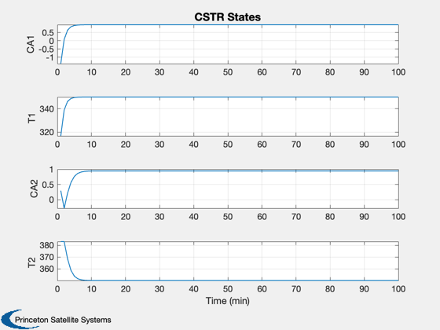

Simple Continuous Stirred Tank Reactor Simulation
Simulates a simple model of a continuous stirred tank reactors (CSTR) in series.
------------------------------------------------------------------------- Reference: Henson, M. A. and D. E. Seborg. (1997.) Nonlinear Process Control, Prentice-Hall. pp. 198-199. ------------------------------------------------------------------------- See also: RHSCSTR, TimeGUI, Plot2D -------------------------------------------------------------------------
Contents
%-------------------------------------------------------------------------- % Copyright (c) 2001 Princeton Satellite Systems, Inc. % All rights reserved. %-------------------------------------------------------------------------- % Since version 1. %--------------------------------------------------------------------------
Model parameters
F = feed stream, C = coolant stream, 1 = 1st reactor, 2 = 2nd reactor ------------------------------------
d.q = 100; % Flow rate (L/min) d.qC = 100; % Coolant flow rate (control) d.cAF = 1; % Concentration of the feed (mol/L) d.tF = 350; % Temperature of feed stream (deg-K) d.tCF = 350; % Temperature of coolant stream (deg-K) d.v1 = 100; % Volume tank 1 (L) d.v2 = 100; % Volume tank 2 (L) d.k0 = 7.2e10; % 1/min d.eOR = 1e4; % E/R (deg-K) d.nDH = 4.78e-4; % Negative change in enthalpy (J/mol) d.rho = 1000; % Density (g/L) d.rhoC = 1000; % Density of coolant (g/L) d.cP = 0.239; % Specific heat constant pressure (J/g-K) d.cPC = 0.239; % Specific heat constant pressure of coolant (J/g-K); d.hA1 = 1.67e5; % J/min-K d.hA2 = 1.67e5; % J/min-K cA1 = 5e-3; t1 = 250;
State [cA1;t1;cA2;t2]
----------------------
x = [cA1;t1;cA1;t1]; t = 0;
The control sampling period and the simulation integration time step
---------------------------------------------------------------------
dT = 1;
Number of sim steps
--------------------
nSim = 100; tEnd = nSim*dT;
Plotting arrays
----------------
tPlot = zeros(1,nSim); xPlot = zeros(4,nSim);
Run the simulation
See RHSCSTR.m which gives a model of continuously-stirred tank reactors in series. -------------------------------------------------------------------------
for k = 1:nSim x = RK4( 'RHSCSTR', x, dT, t, d ); t = t + dT; tPlot(k) = t; xPlot(:,k) = x; end
Plot results
Open loop response is shown. ----------------------------
Plot2D( tPlot, xPlot,'Time (min)',['CA1';'T1 ';'CA2';'T2 '], 'CSTR States') %-------------------------------------- % $Id: 6fbe1cccb4cec65433806fc26e00e57ae94c23fd $